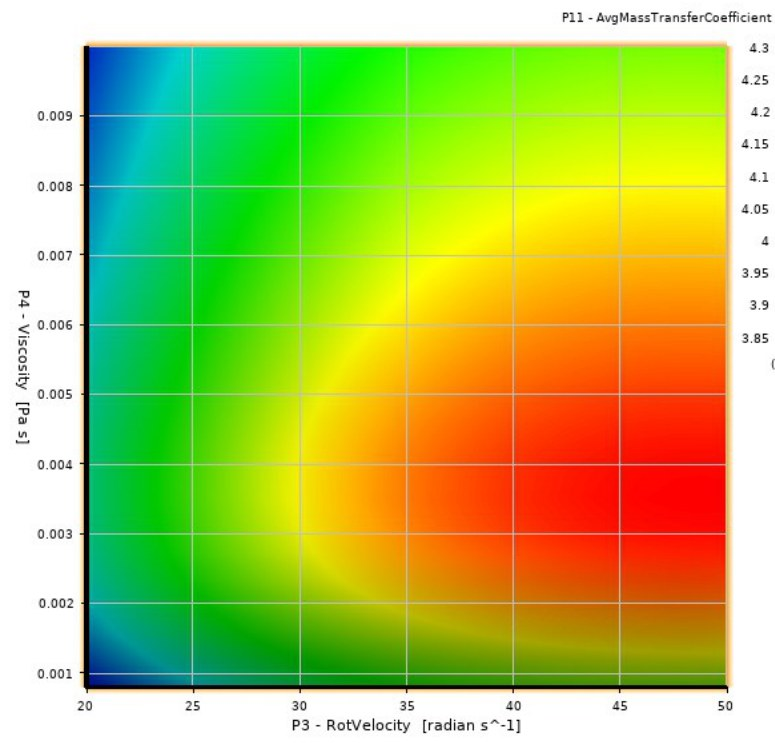
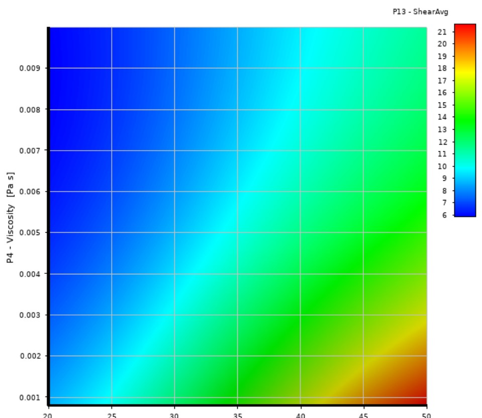
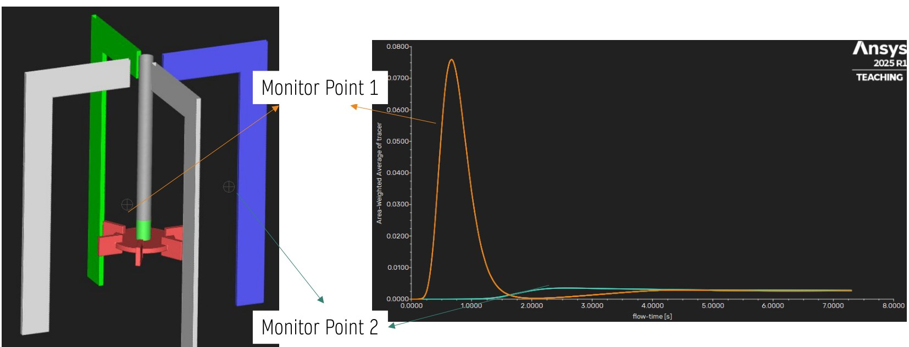
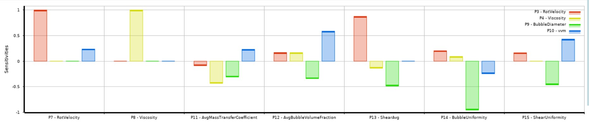

Self-directed, 2025
Stirred-tank bioreactor CFD
A bioprocess CFD study built for an interview: gas–liquid flow in a stirred tank, oxygen mass transfer and shear mapped as fields, a four-input design of experiments, and a multi-objective optimisation over the resulting response surfaces.
Why I built this
Most of my professional CFD has been on gas-turbine aerodynamics. Bioprocess CFD sits in an adjacent methodological neighbourhood — multiphase flow, mass transfer, and a physics-informed optimisation objective — but the engineering question is very different: you are not optimising thrust or efficiency, you are keeping cells alive while feeding them enough oxygen. I built this as a passion project partly to demonstrate versatility and partly because the problem is genuinely interesting: the same impeller that delivers oxygen also shears cells apart, and the design is always a trade.
Problem
In a stirred-tank bioreactor, volumetric oxygen mass-transfer coefficient (kLa) governs how much dissolved oxygen reaches suspended cells, and is the single most-tracked KPI in bioprocess scale-up. It is raised by faster impellers, more aggressive sparging, and tighter gas–liquid interfacial area. The same levers raise hydrodynamic shear stress, which damages shear-sensitive mammalian cells and is itself the headline risk for scale-up. A well-chosen operating point lands high on the kLa surface and low on the shear-stress surface simultaneously — that Pareto trade was the object of the study.
Approach
- Gas–liquid flow in CFX. Euler–Euler two-phase model of a baffled stirred tank, with the impeller in a rotating domain.
- Bubble sizes and mixing in Fluent. A separate case with a bubble population-balance model and a transient species tracer to measure mixing time.
- Mass transfer as a field. The liquid-side coefficient kL from a Higbie penetration-type expression, kL ∝ √(D·|uslip|/db), evaluated per cell with CEL expressions and then volume-averaged.
- Design of experiments. Four inputs: impeller speed 20–50 rad/s, liquid viscosity 1–10 mPa·s, bubble diameter about 2–9 mm and gas flow 0.2–0.6 vvm. Five responses: kL, gas holdup, bubble uniformity, mean shear and shear uniformity.
- Optimisation. Response surfaces from the DOE, then a multi-objective genetic algorithm (MOGA, an NSGA-II variant) that converged after 9,113 surrogate evaluations.



Results

Limits
- No experimental validation. The model shows design trends; absolute kL values would need a measured kLa to calibrate against.
- One geometry. Results hold for this impeller and tank; another vessel means a new DOE, though the workflow carries over.
Artifacts
- Interview demo summary deck (self-authored).
- Set of rendered transient mixing animations (one selected for embedding above).